Overview
In this project we implemented both Bezier Curves/Surfaces and Triangle Meshes in order to model and render smooth curves, given 3D geometric models. It was interesting use both of these methods one after another to represent smooth surfaces.
Section I: Bezier Curves and Surfaces
Part 1: Bezier curves with 1D de Casteljau subdivision
|
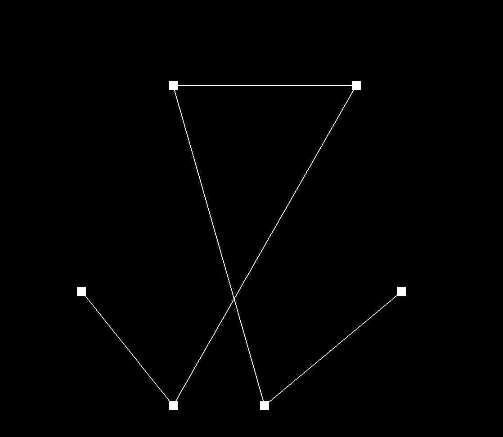
|
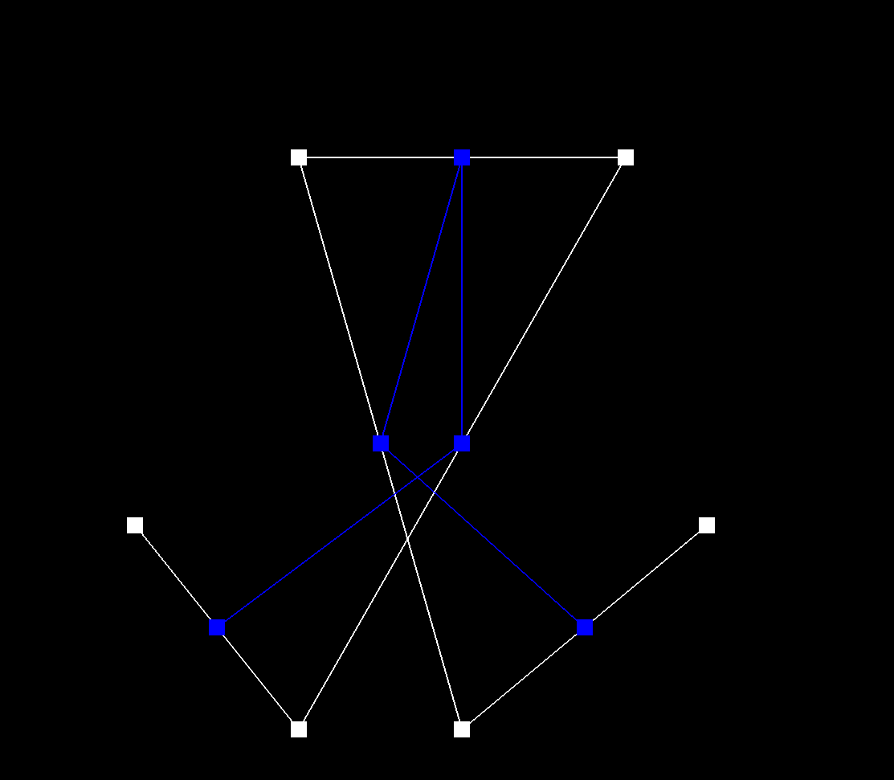
|
|
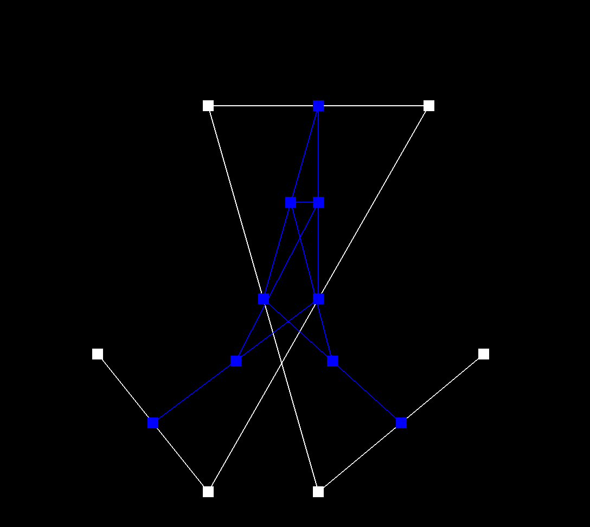
|
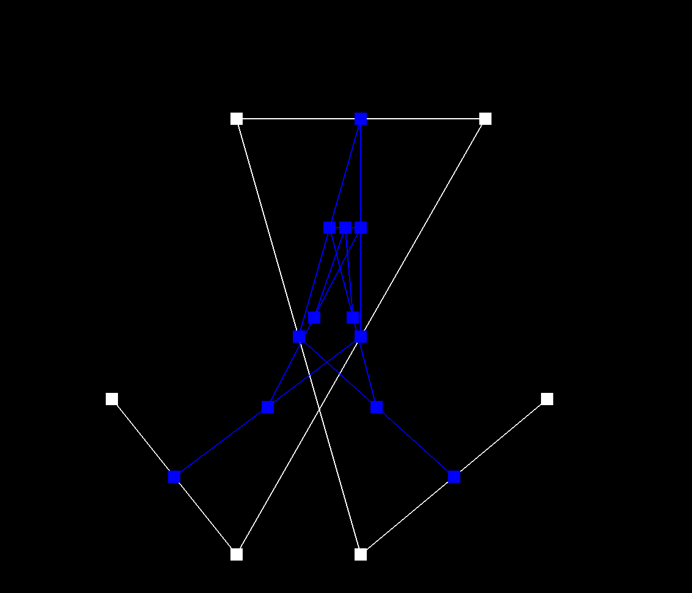
|
|
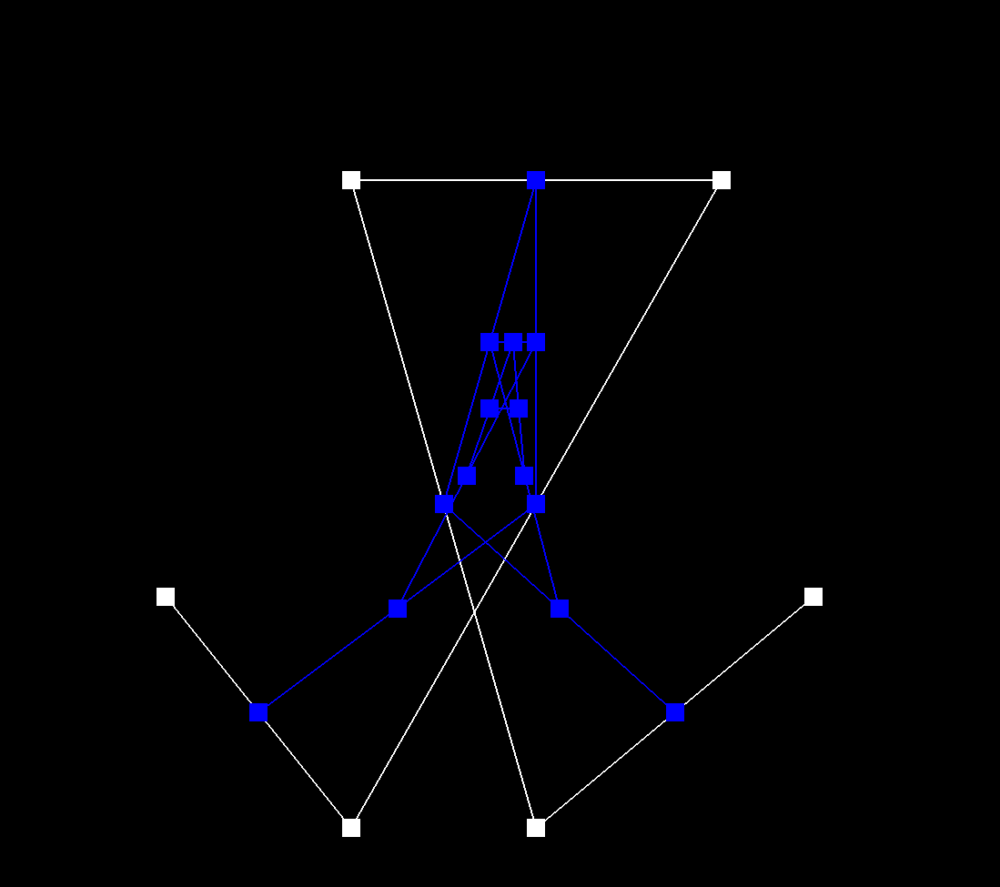
|
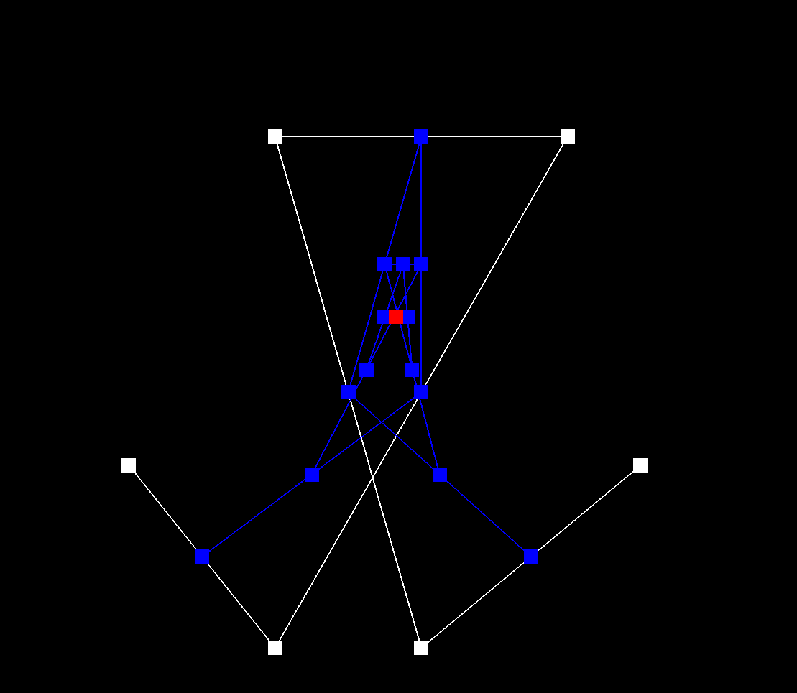
|
|
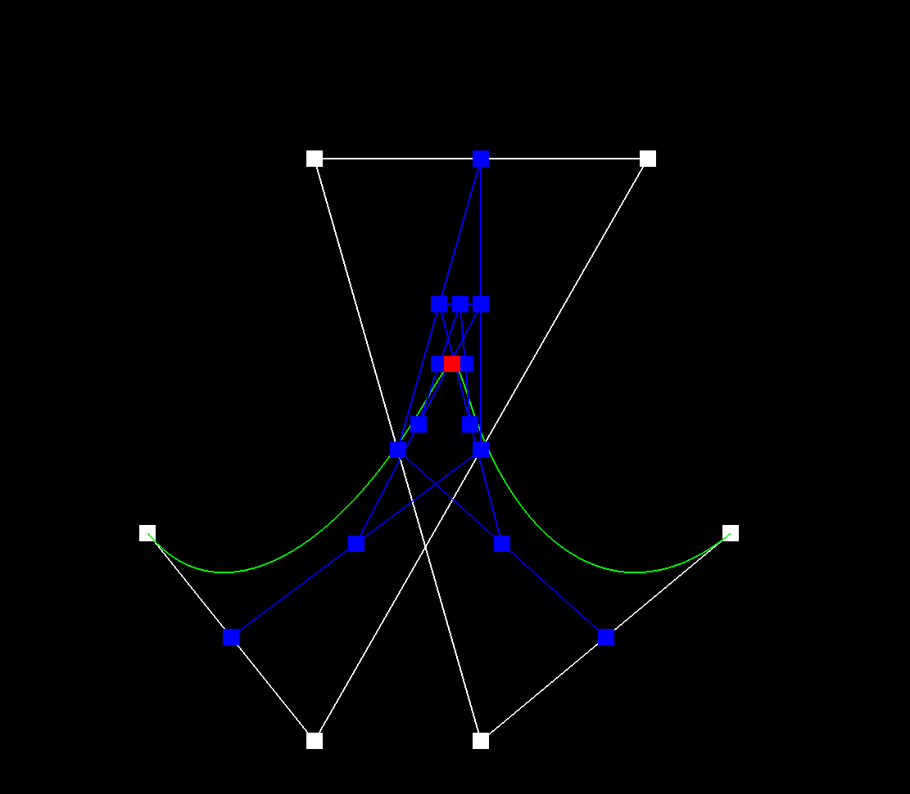
|
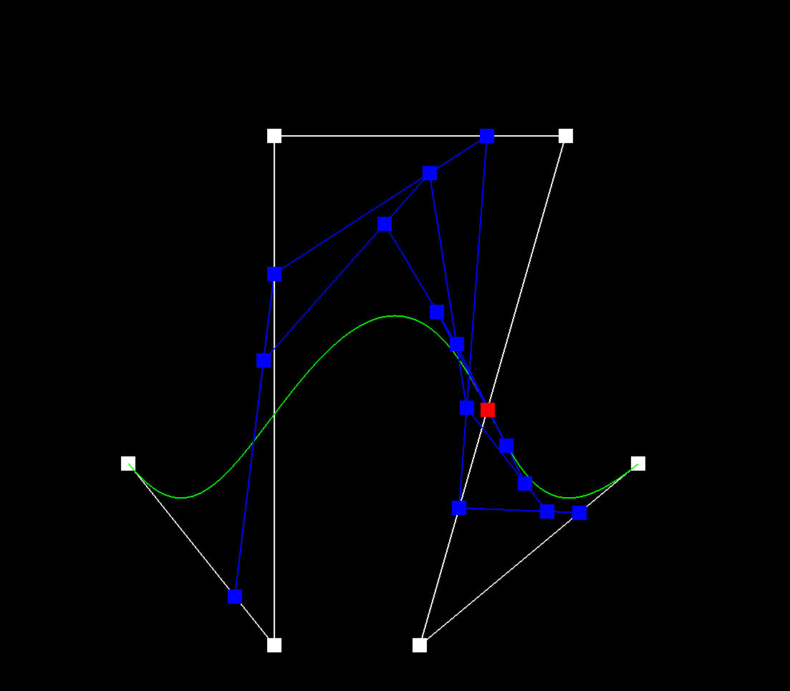
|
Briefly explain de Casteljau's algorithm and how you implemented it in order to evaluate Bezier curves. De Casteljau's algorithm is a recursive way to evaluate Bezier curves of order n. From n points, at each recursive step, a linear interpolation is done between the points, reducing the number of points by 1. This is seen done for a arbitrary t value on the Bezier curve in the images above. Each step/level reduces points by 1 and adds a linear interpolation. The resulting point is given in red at level 5, which lies on the Bezier curve.
The recursive step is implemented in BezierCurve::evaluateStep, which is a simple linear interpolation.
This is done n-1 times to obtain the Bezier curve point at time t. A slightly different Bezier curve
is shown in the bottom right plot where two control points are flipped and t is changed.
Part 2: Bezier surfaces with separable 1D de Casteljau subdivision
The de Casteljau algorithm described above allows us to take a set of 2D control points and draw a Bezier curve. Extending the set of control points to 3D, we can create a n by n grid of control points. For each row of control points in that grid, de Casteljau's algorithm will produce a Bezier curve with parameterization t. Then, all n Bezier curves at time t can be taken as a set of control points. De Casteljau's algorithm is applied again, this time with a different parameterization u. So, we can draw Bezier curves in u along the Bezier curves in t, creating a surface.
Section II: Sampling
Part 3: Average normals for half-edge meshes
|
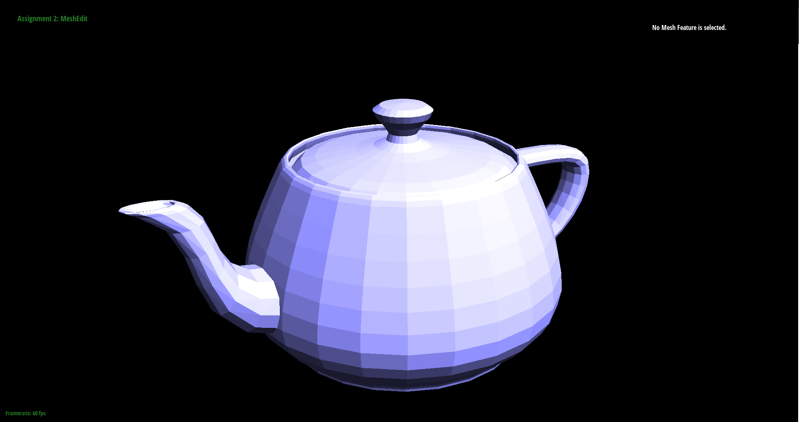
|
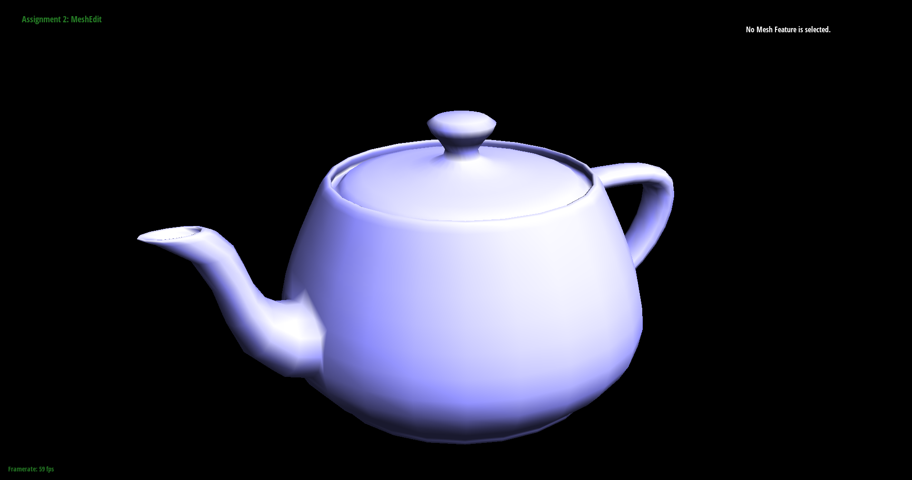
|
Each triangle in a mesh has a normal vector, and flat shading can use that direction to assign a shade to each triangle. This is shown above with the flat shading teapot. However, this is not good for smooth surfaces, as the mesh needs to become very fine to get a good looking image.
Phong shading uses interpolated normal vectors across each triangle to shade each pixel, getting a better shading for the same mesh. This uses area-weighted normal vectors at each vertex of the mesh. This is implemented by iterating through triangles around a vertex through the use of halfedges. The two edges vectors of the triangle coming from the vertex can be cross producted to find a normal vector to that triangle with length 2 * Area. An average of these normal vectors produces the area-weighted normal vector.
Part 4: Half-edge flip
We first designated variables for each of the relevant halfedges, vertices, and faces that
we needed to modify or reference. Then, using the Halfedge::setNeighbors method,
we modified pointers for the 6 halfedges inside the two triangles in question.
The twins and associated edges were never changed, but the next pointers, associated vertices,
and associated faces were sometimes modified.
As suggested by the spec, we did not create or delete any objects; rather, the middle edge's
pointers were adjusted so that the edge would turn out flipped.
Lastly, the halfedge pointer on each vertex and face were updated, and the
input edge e0 was returned. The edges did not change which halfedge they were
attached to, so they did not require modification.
As an edge case, at the beginning of the flip function, the function returns immediately
if e0->isBoundary() is true, since boundary edges cannot be flipped.
|
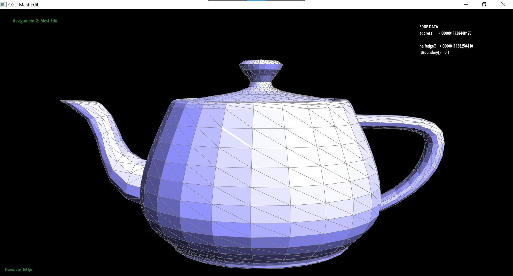
|
|
|
|
My debugging process was not very eventful. My code initially made a hole in the teapot when flipping an edge, but I was able to fix it by carefully rereading my code.
Part 5: Half-edge split
Similar to the edge flip operation, we start by returning immediately if
e0->isBoundary() is true (no extra credit).
Then, we assign each relevant existing mesh element to a variable.
Then, we create new mesh elements: 3 new edges, 6 halfedges, 1 vertex, and 2 faces.
Lastly, we adjust pointers of existing and new mesh elements. We move the middle/shared
edge to be connected to the middle vertex and one of the existing vertices, then fill
in the three remaining edge positions with the newly created elements.
We also set the position of the newly created vertex to the midpoint of vertices b and c,
as notated in the spec. This is done with the following formula:
(c->position + b->position) / 2. Lastly, we return the newly created vertex.

|
|
|
|
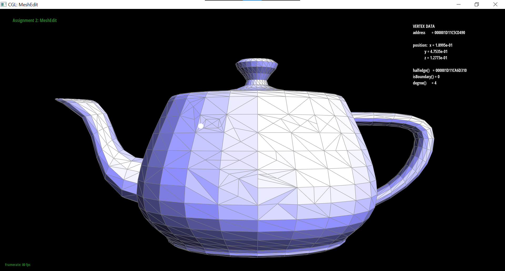
|
My debugging journey was not very eventful. Similar to Part 4, I fixed my bugs by reading through my code carefully and fixing errors I caught. It was helpful drawing out a picture of the splitting process.
Part 6: Loop subdivision for mesh upsampling
Our implementation just follows the comments in the starter code. First, we calculate the new positions
of both old and new vertices, storing them in the newPosition attribute of the associated
vertex and edge objects. We also mark the old vertices' isNew attributes as false.
Then we perform 4-1 subdivision by splitting every old edge then flipping every
edge that connects a new vertex to an old vertex. In the splitting step, one implementation hurdle was
figuring out how to iterate over only the original edges. We did this by iterating only
mesh.nEdges() number of times. We also set the vertex and edge isNew boolean
attributes during the splitting phase for use in the flipping phase.
Lastly, for every vertex in the mesh, we update the actual vertex position's
using the newPosition values we recorded earlier.
Sharp edges
After loop subdivision, sharp corners and edges tend to be rounded out. We experimented in seeing if we can reduce this effect by performing lots of edge splits in one corner, and we saw that this does reduce the rounding-out effect by a bit.
|
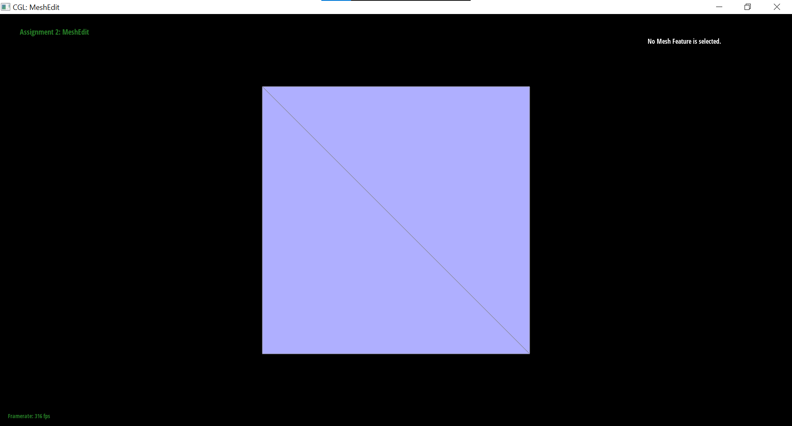
|
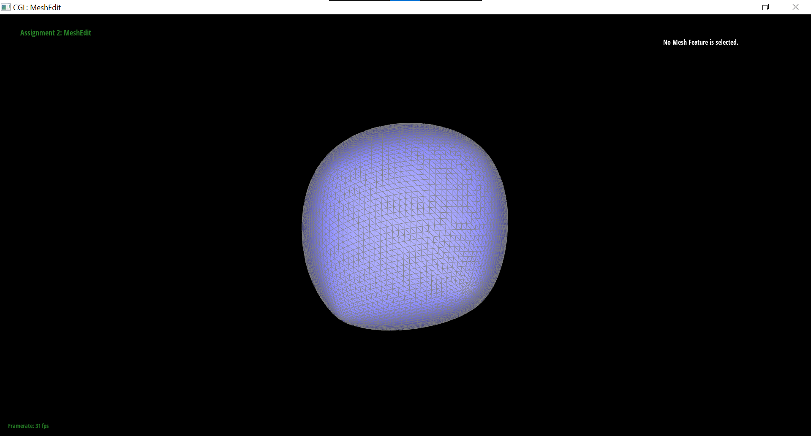
|
|
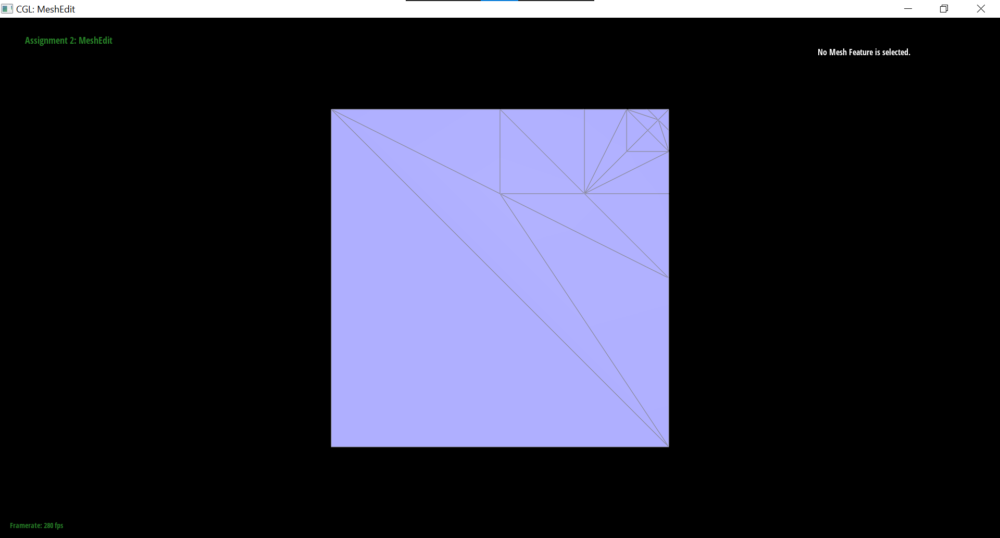
|
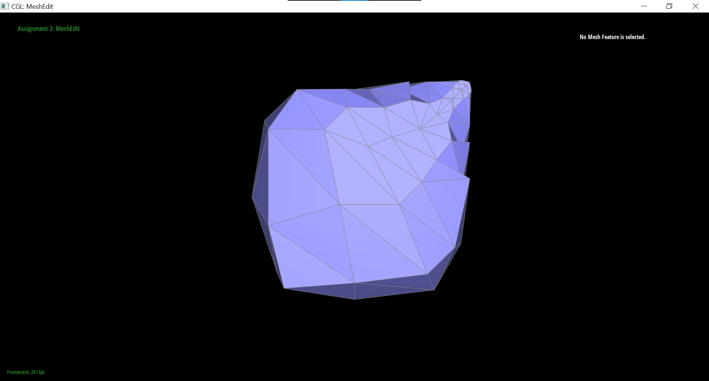
|
|
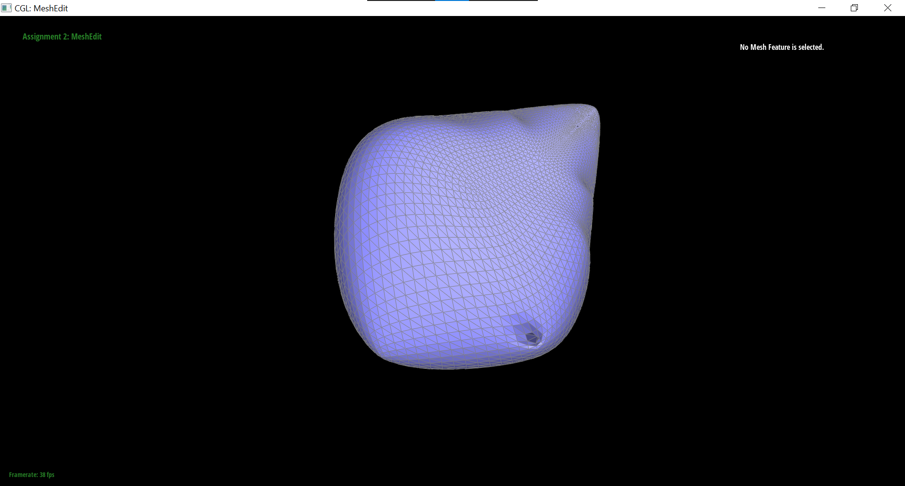
|
Cube asymmetry
Several iterations of loop subdivision on the cube results in some asymmetry. We tried to alleviate this
by splitting each diagonal edge on each face of the cube once. The general idea here was that, if the
starting cube is more symmetrical, then the cube after loop subdivision hopefully should be more symmetrical
as well.
Below are pictures of the cube with and without the preprocessing edge splitting, before
and after 5 iterations of loop subdivision each.
|
|
|
|
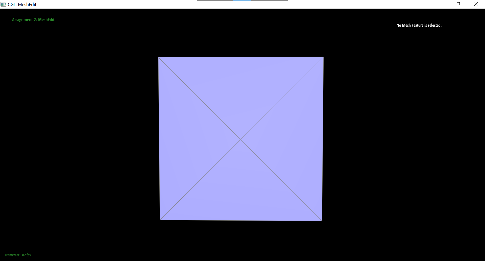
|
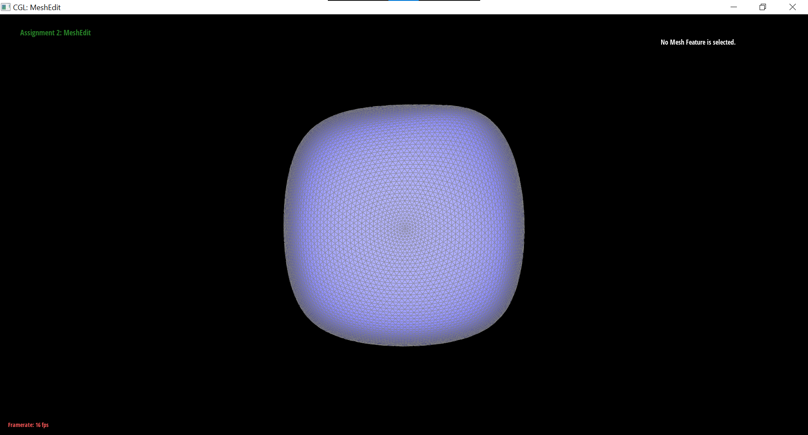
|